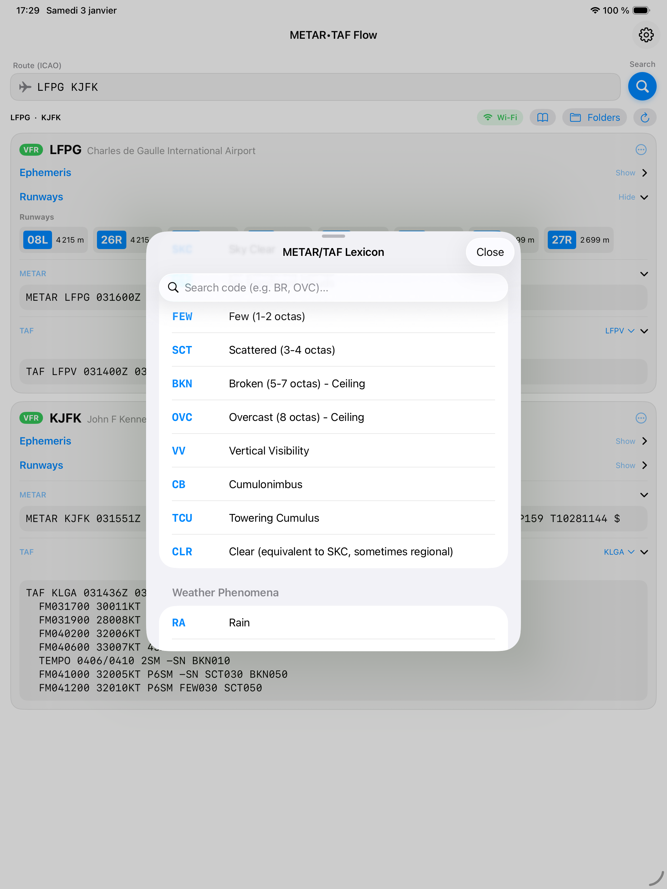
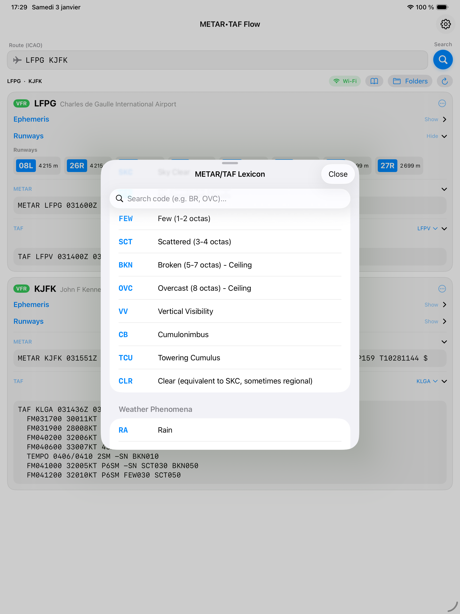

METAR•TAF Flow
Version 1.2
METAR•TAF Flow est l'outil indispensable pour les pilotes et passionnés d'aviation. Accédez instantanément aux conditions météorologiques et prévisions pour tous les aéroports du monde, avec une interface claire, moderne et intuitive.
🌍 Données Mondiales
Accès direct aux serveurs de la NOAA pour des données METAR et TAF en temps réel, où que vous soyez.
🎨 Décodage Visuel
Visualisez instantanément les conditions de vol (VFR, IFR, etc.) grâce à un code couleur intuitif et un décodage clair.
✈️ Gestion de Route
Créez des groupes d'aéroports, organisez vos vols et visualisez la météo sur l'ensemble de votre trajet en un coup d'œil.
☀️ Éphéméride Précise
Calcul automatique des heures de lever/coucher du soleil et du crépuscule civil selon votre position et la réglementation.


Support & Contact
Besoin d'aide ou une suggestion ?
Contacter le support par email
METAR•TAF Flow is the essential tool for pilots and aviation enthusiasts. Get instant access to weather conditions and forecasts for airports worldwide, with a clean, modern, and intuitive interface.
🌍 Worldwide Data
Direct access to NOAA servers for real-time METAR and TAF data, wherever you are.
🎨 Visual Decoding
Instantly visualize flight conditions (VFR, IFR, etc.) with intuitive color coding and clear decoding.
✈️ Route Management
Create airport groups, organize your flights, and view weather across your entire route at a glance.
☀️ Accurate Ephemeris
Automatic calculation of sunrise/sunset times and civil twilight based on your location and regulations.


 

Support & Contact
Need help or have a suggestion?
Contact Support by Email